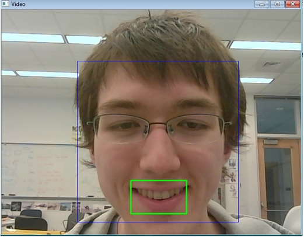
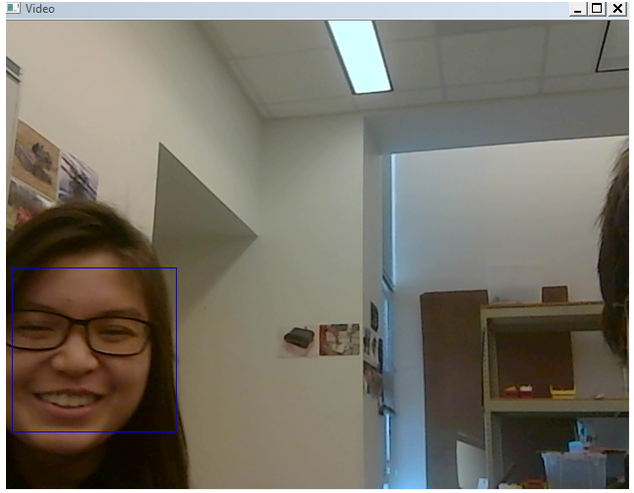

Github link:
https://github.com/Pratool/dancing-robotBig Idea:
Create and use a smile detector to send information to the arduino in order to send specified set of commands to the servo to execute a dance.
Smile Detector
Face and smile detection:
OpenCV has a library dedicated to identifying different regions of human faces and smiles. We incorporated these libraries (haar_cascade files) to create a face and mouth detector on a computer, using Python. Essentially the program takes the video feed from a webcam, runs the detector on the images, draws a square around the face and mouth regions, and shows the results in a live window. To increase the efficiency and accuracy of the mouth detector, we limited it to only analyze the images within the detected face regions.
Figure 1: An image from the video feed of the face and mouth detector on three people
This beginning iteration worked very well for our purposes and consistently delivered working results. Occasionally the program would identify faces in the background that were not there and the face detector would only detect them if the person’s face was angled directly toward the camera with some flexibility for faces that were turned slightly away from the camera, but it was working fairly consistently. Using this as a starting block, we attempted to incorporate the OpenCV smile detector. However, no matter how much testing or strategies we tried to use, we could not get it to produce any working results. For example, one of our strategies was to limit the smile detector to the area within the detected face and later to only within the mouth region, but it continued to fail. We then decided to construct our own smile detector.
Smile detector trained:
We created a new smile classifier by using machine learning to train our computer to identify smiles. We obtained a database of 20,000 labeled smiles from Olin Professor Paul Ruvolo and used a Python library called scikit-learn to generate a smile detection model using an algorithm called Logistic Regression. Essentially, it calculated the probability that the read image contained a smile and returned a generalized image of a smile. When the program runs, the classifier compares the detected faces to the generalized image and calculates a log probability to determine how similar detected faces are to it. It then returns the value which we set a threshold on for either smiling or not. With this classifier, we were able to detect smiles reliably and produce working results.

Figure 2: The generalized image of a smile that the smile detector uses to compare detected faces to in order to determine if the person is smiling. This image was created from training 20,000 labeled images.

Figure 3a: An image from the video feed of the smile detector when a person is not smiling
Figure 3b: The output of running the program when neither a face nor a smile is detected, when a face is detected but no smile, and when both a face and a smile are detected. The above screenshot of Figure 3a was taken at the bottom line of this printout where a face is detected, but no smiles are detected.

Figure 3c: An image from the video feed of the smile detector when a person is smiling. Note how the smile probability is above 1.0.

Figure 3d. The console printout for figure 3c, when a person is smiling.
Potential problems with smile detector:
There is some variability in the returned values. For example, although the program correctly identified when Julian and Michelle were smiling, the returned values for Michelle were consistently lower than Julian’s. Because of that, the smile detection sometimes detected smiles on Julian when Julian wasn’t smiling, and sometimes failed to detect smiles on Michelle when Michelle was smiling. This problem could be solved by adjusting the smile probability threshold for each individual, but is not a practical solution if this robot is to be used by many people. Instead we set the threshold at a value that on average detects smiles for the majority of the people. We determined this number by the 20,000 smiling data we trained the model off of.
Figure 4a: Picture of Michelle smiling, but a smile is not detected.
Figure 4b. An image from the video feed of the smile detector. Note how the percentages are different from figure 3b.
We also found that the background and factors such as lighting affect the smile detection as well. Because of this, we decided to keep these factors constant by always using it in the same place, under the same background and lighting.
Robot Motion (Arduino):
We have three degrees of freedom for the body (swaying, heaving, and pitching) and a fourth degree for the wings (heaving). We tested out a library called VarSpeedServo which can control up to 8 servos simultaneously, which we ended up using instead of the standard Arduino Servo library.
There are three different dances programmed. The first executes when the penguin does not detect faces. It sways for seven counts then switches to heaving for three seconds before resetting to the swaying motion. The second dance executes when the penguin detects faces but no smiles. The penguin moves side to side, switches to up and down movements, then switches back to the side to side motion. The third dance executes when the penguin detects a smile. To give the impression that the penguin is dancing and bouncing, we timed the swaying and heaving servos such that the body moves upward as it reaches the farthest programmed reach. As the body sways to the opposite side, it bobs down.
Integration between python(smile detection) and Arduino(motors for dance):
For integration between the smile detector and the motor for the dance moves, we used Pyserial to write numbers to the serial port of the Arduino from python, depending on what the facial recognition software detected from the streaming video. A ‘0’ is written when no faces are detected, ‘1’ is written when at least one face is detected, but no smiles are detected, and ‘2’ is written when at least one face is detected and at least one smile is detected.
These numbers on the serial port are read by the arduino, and the arduino activated a combination of servos to execute one of 3 dance moves for the robot.
We chose to use the webcam camera instead of a detached camera because we have found that the arduino does not have enough capacity to process everything quickly enough for the smile detection to be useful.